| preu | area | qual.total | condicio.total | any | carrer | tipus | garatge.cotxes | garatge.area | aire |
|---|---|---|---|---|---|---|---|---|---|
| 181000 | 1604 | 6 | 5 | 1997 | Pave | 1Fam | 2 | 470 | Y |
| 124000 | 1584 | 5 | 5 | 1967 | Pave | Duplex | 3 | 792 | Y |
| 72000 | 819 | 5 | 4 | 1919 | Pave | 1Fam | 0 | 0 | N |
| 137000 | 1229 | 6 | 6 | 1980 | Pave | TwnhsE | 2 | 462 | Y |
| 124500 | 864 | 4 | 7 | 1970 | Pave | 1Fam | 2 | 463 | Y |
| 228500 | 2169 | 8 | 5 | 2002 | Pave | 1Fam | 2 | 647 | Y |
StatWars: el meu primer model predictiu
Arnau Garcia
Introducció
En aquesta activitat, us volem presentar una eina molt poderosa que utilitzem en estadística per entendre millor el món que ens envolta: els models predictius. Farem servir:
- Regressions lineals
- Regressions lineals generalitzades
Veurem com podem utilitzar les matemàtiques per establir relacions entre diferents variables i fer prediccions amb aquestes.
Introducció
Aquest document serveix com a exemple de com ajustar dos models predictius fent servir el llenguatge de programació R. R, és el principal llenguatge de programació pels estadístics. Es tracta d’un software lliure, gratuït que es troba a l’abast de tothom.
Introducció
Veurem dos models predictius:
- Predicció de preus d’habitatges.
- Predicció d’espècies de pingüins.
Predicció de preus d’habitatges
En aquest primer model volem predir el preu de les cases de la ciutat de Ames, a Iowa. Farem servir una base de dades amb dades reals sobre inmobles en aquesta ciutat dels Estats Units. Podeu trobar informació sobre la base de dades original a https://www.openintro.org/data/index.php?data=ames.

Ames, Iowa
Taula de dades
Farem servir la següent taula de dades per entrenar el nostre primer model predictiu:
Variables
En aquesta base de dades tenim informació sobre 2842 vivendes, per cadascuna tenim 10 variables. Les variables que tenim en aquesta taula són:
preu: preu de l’habitatge.area: àrea de la vivenda (en peus quadrats).qual.total: valora de l’1 al 10 el material i el acabat general de l’habitatge.condicio.total: valora de l’1 al 10 l’estat general de l’habitatge.any: any de construcció de la vivenda.
Variables
carrer: tipus de carrer que dona accés a l’inmoble.tipus: tipus d’habitatge.garatge.cotxes: número de cotxes que hi caben en el garatge.garatge.area: àrea del garatge (en peus quadrats).aire: variable que indica si la vivenda té aire condicionat (Y si en té, N si no).
Exploració de dades
Fem una exploració de les dades a través de diferents gràfics que ens ajudaran a saber com es comporten les nostres variables amb respecte la variable que volem predir (preu).
Exploració de dades
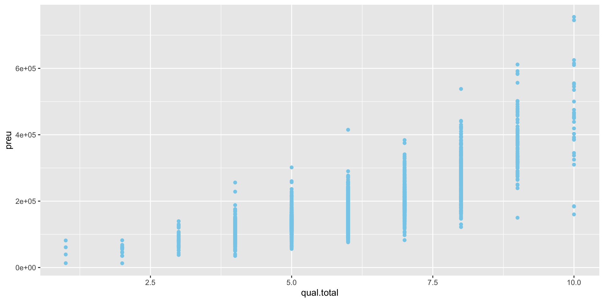Exploració de dades
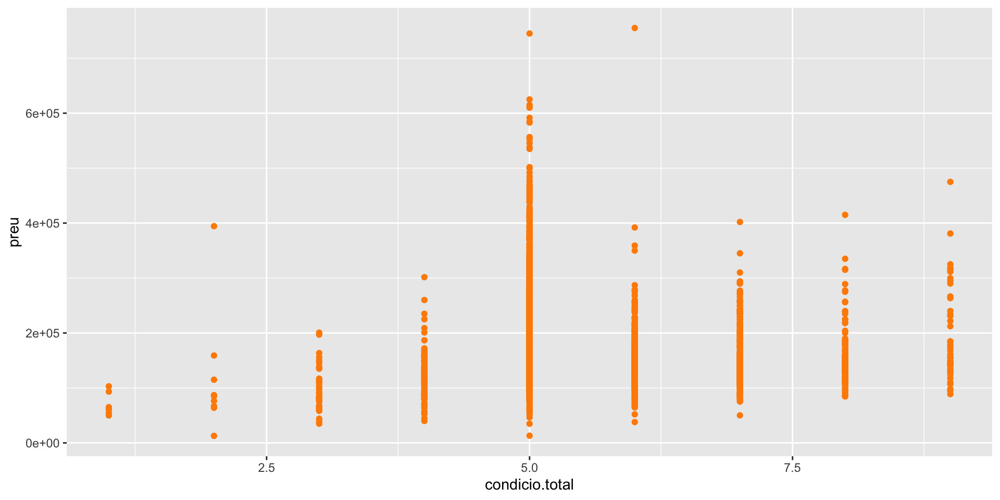Exploració de dades
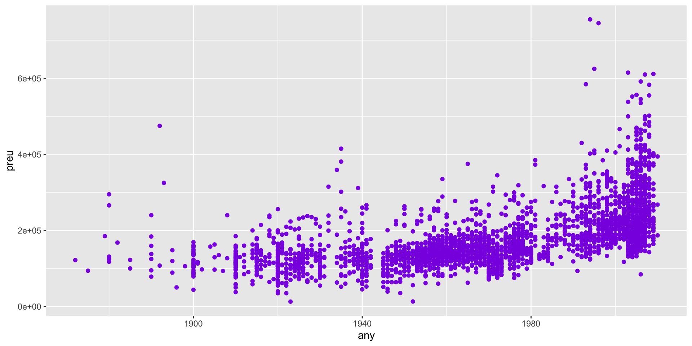Exploració de dades
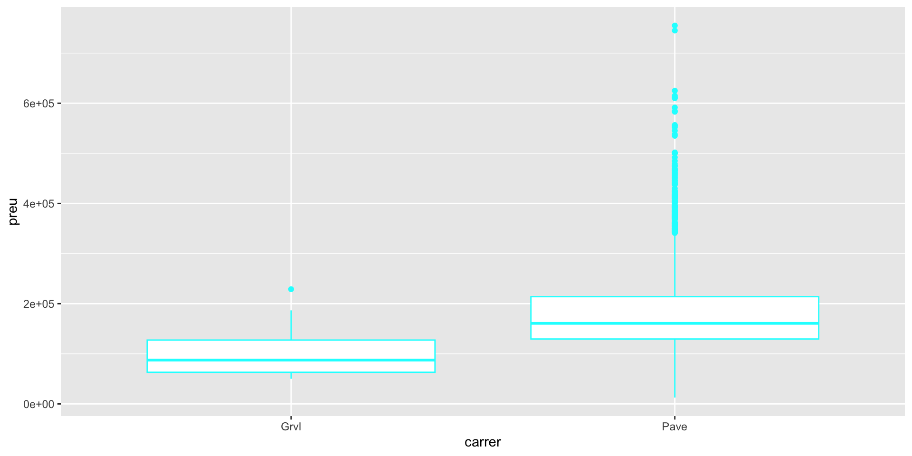Exploració de dades

Exploració de dades

Exploració de dades
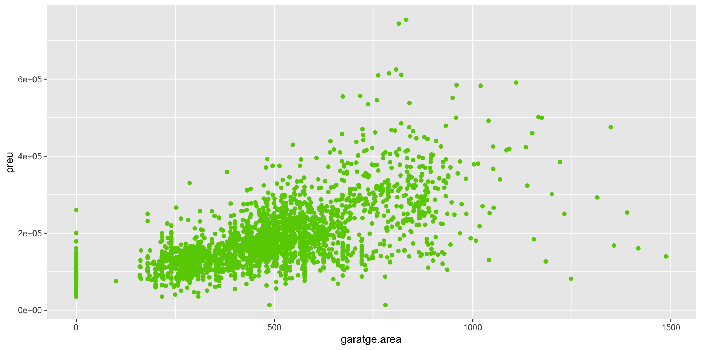Exploració de dades
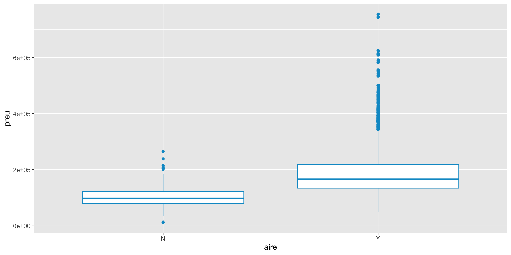Model lineal
Ajustarem el següent model lineal:
\[ preu_i = \beta_1area_i + \beta_2qual.total_i + \beta_3condicio.total_i + \beta_4any_i + \beta_5tipus_i \\ + \beta_6garatge.area_i + \beta_7aire_i\]
Els diferents \(\beta\)’s són coeficients que hem d’estimar.
Model lineal
Ajustem un model lineal (podeu veure informació sobre el model lineal a https://es.wikipedia.org/wiki/Regresi%C3%B3n_lineal):
Call:
lm(formula = preu ~ area + qual.total + condicio.total + any +
tipus + garatge.area + aire, data = cases_train)
Residuals:
Min 1Q Median 3Q Max
-419189 -21158 -3136 15775 287734
Coefficients:
Estimate Std. Error t value Pr(>|t|)
(Intercept) -1.188e+06 6.931e+04 -17.133 < 2e-16 ***
area 5.772e+01 1.885e+00 30.620 < 2e-16 ***
qual.total 2.214e+04 8.060e+02 27.475 < 2e-16 ***
condicio.total 4.978e+03 7.379e+02 6.746 1.83e-11 ***
any 5.599e+02 3.572e+01 15.675 < 2e-16 ***
tipus2fmCon -8.954e+03 5.128e+03 -1.746 0.0809 .
tipusDuplex -2.543e+04 3.816e+03 -6.663 3.21e-11 ***
tipusTwnhs -3.255e+04 3.988e+03 -8.163 4.86e-16 ***
tipusTwnhsE -1.141e+04 2.784e+03 -4.098 4.29e-05 ***
garatge.area 5.551e+01 4.306e+00 12.893 < 2e-16 ***
aireY -8.160e+03 3.264e+03 -2.500 0.0125 *
---
Signif. codes: 0 '***' 0.001 '**' 0.01 '*' 0.05 '.' 0.1 ' ' 1
Residual standard error: 37530 on 2830 degrees of freedom
(1 observation deleted due to missingness)
Multiple R-squared: 0.782, Adjusted R-squared: 0.7812
F-statistic: 1015 on 10 and 2830 DF, p-value: < 2.2e-16Dades de test
Ara, descarreguem una taula de dades que teniem guardada apart. En aquesta taula de dades hi ha dades noves que no s’han fet servir per entrenar el nostre model. El que farem amb aquestes noves dades és testejar el nostre model i veure si és capaç de fer bones prediccions.
Dades de test
| preu | area | qual.total | condicio.total | any | carrer | tipus | garatge.cotxes | garatge.area | aire |
|---|---|---|---|---|---|---|---|---|---|
| 127000 | 1040 | 5 | 8 | 1962 | Pave | 1Fam | 1 | 260 | Y |
| 169000 | 1494 | 6 | 6 | 1974 | Pave | 1Fam | 2 | 461 | Y |
| 132000 | 1268 | 5 | 6 | 1954 | Pave | 1Fam | 1 | 244 | Y |
| 143750 | 848 | 6 | 5 | 2003 | Pave | TwnhsE | 2 | 420 | Y |
| 126000 | 856 | 6 | 6 | 1939 | Pave | 1Fam | 2 | 399 | Y |
| 100000 | 1666 | 5 | 2 | 1931 | Pave | 1Fam | 0 | 0 | Y |
Prediccions
A continuació, fem prediccions amb el model que hem ajustat anteriorment, i veiem si aquestes prediccions s’acosten al valor real de les noves dades.
Prediccions
| Real | Predit | Difer |
|---|---|---|
| 127000 | 127750.6 | 750.5647 |
| 169000 | 184018.8 | 15018.8123 |
| 132000 | 125586.4 | 6413.5833 |
| 143750 | 144307.0 | 557.0225 |
| 126000 | 124159.1 | 1840.9353 |
| 100000 | 102222.6 | 2222.5760 |
| 185000 | 206353.6 | 21353.6221 |
| 169000 | 142301.8 | 26698.1670 |
Predicció d’espècies de pingüins
En aquest segon model volem predir espècies de pingüins tenint en compte característiques físiques d’aquests. Les tres espècies de pinguins amb les que treballarem són: Gentoo, Adelie i Chinstrap.
Gentoo
Adelie

Chinstrap
Base de dades
Llegim la base de dades i imprimim algunes de les observacions de la taula de dades que farem servir:
| species | island | bill_length_mm | bill_depth_mm | flipper_length_mm | body_mass_g | sex |
|---|---|---|---|---|---|---|
| Gentoo | Biscoe | 49.5 | 16.1 | 224 | 5650 | male |
| Gentoo | Biscoe | 55.1 | 16.0 | 230 | 5850 | male |
| Adelie | Dream | 39.7 | 17.9 | 193 | 4250 | male |
| Adelie | Biscoe | 35.0 | 17.9 | 190 | 3450 | female |
| Adelie | Torgersen | 40.6 | 19.0 | 199 | 4000 | male |
| Chinstrap | Dream | 52.0 | 18.1 | 201 | 4050 | male |
Variables
species: espècie del pingüi (pot ser Gentoo, Adelie o Chinstrap).island: illa de procedència del pingüi.bill_length_mm: longitud del bec (en mm).bill_depth_mm: profunditat del bec (en mm).flipper_length_mm: longitud de les aletes (en mm).body_mass_g: pes (en grams).sex: sexe del pingüi.
Observació
Mentre que abans volíem predir una variable numèrica i contínua (el preu d’habitatge), ara volem predir una variable categòrica. Així doncs, haurem de fer servir un altre model diferent. En aquest cas farem servir un model lineal generalitzat (veure més informació a https://es.wikipedia.org/wiki/Modelo_lineal_generalizado).
Exploració de dades
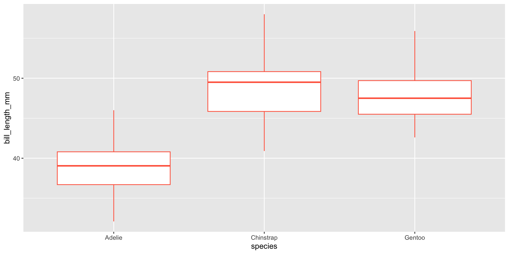Exploració de dades
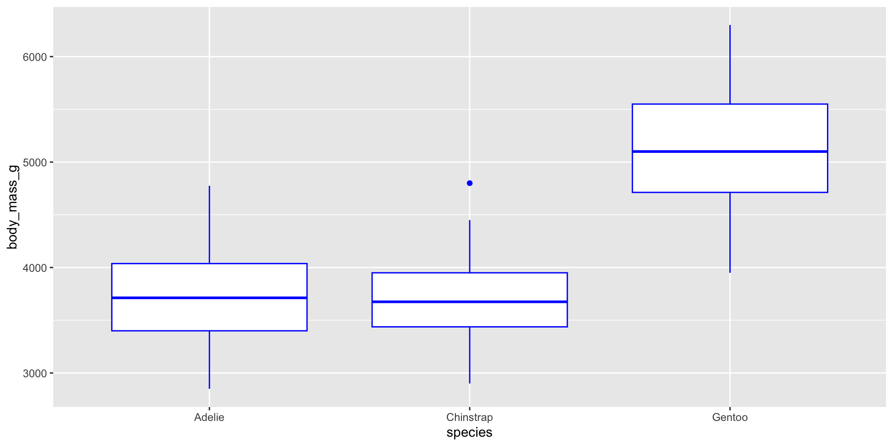Exploració de dades
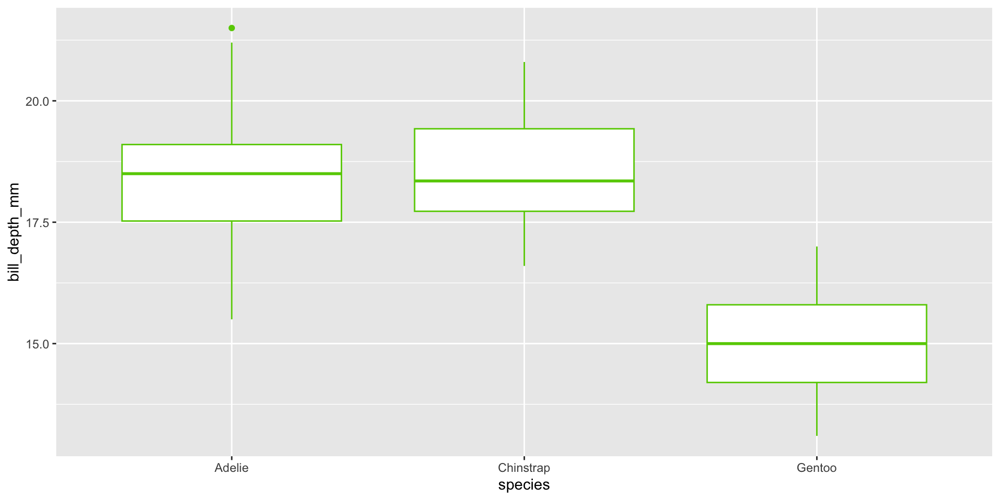Exploració de dades
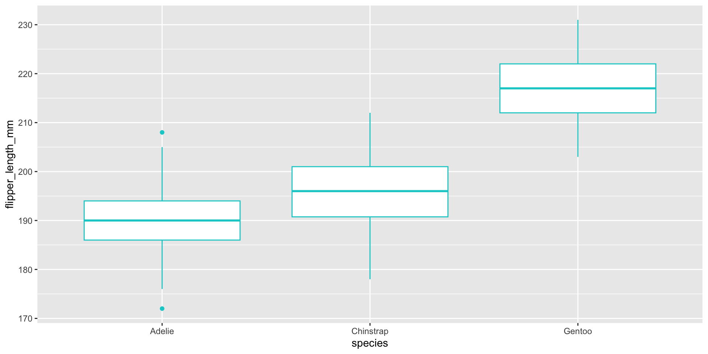Exploració de dades
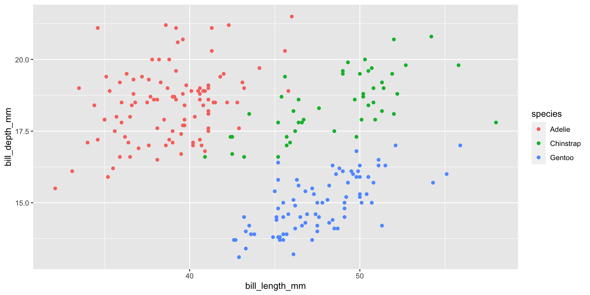Exploració de dades
També podem fer una taula per veure quines espècies de pingüins hi ha a cada illa:
| Biscoe | Dream | Torgersen | |
|---|---|---|---|
| Adelie | 29 | 40 | 33 |
| Chinstrap | 0 | 48 | 0 |
| Gentoo | 83 | 0 | 0 |
Model lineal generalitzat
Ajustem ara el model lineal generalitzat:
trying - island
trying - bill_length_mm
trying - bill_depth_mm
trying - flipper_length_mm
trying - body_mass_g
trying - sex
trying - bill_length_mm
trying - bill_depth_mm
trying - flipper_length_mm
trying - body_mass_g
trying - sex
trying - bill_length_mm
trying - bill_depth_mm
trying - flipper_length_mm
trying - body_mass_g
trying - bill_length_mm
trying - bill_depth_mm
trying - body_mass_g Call:
multinom(formula = species ~ bill_length_mm + bill_depth_mm +
body_mass_g, data = penguins_train, trace = FALSE)
Coefficients:
(Intercept) bill_length_mm bill_depth_mm body_mass_g
Chinstrap -31.421711 26.67539 -45.06581 -0.08653157
Gentoo 1.831695 18.33250 -50.30234 0.01703379
Std. Errors:
(Intercept) bill_length_mm bill_depth_mm body_mass_g
Chinstrap 1.414604e-01 3.3218662775 1.933656306 0.05243895
Gentoo 8.720521e-05 0.0004517812 0.002566747 0.02930422
Residual Deviance: 0.02044068
AIC: 16.02044 Noves dades per fer el test
A continuació ens baixem les dades per fer el test:
| species | island | bill_length_mm | bill_depth_mm | flipper_length_mm | body_mass_g | sex |
|---|---|---|---|---|---|---|
| Adelie | Torgersen | 38.9 | 17.8 | 181 | 3625 | female |
| Adelie | Torgersen | 36.6 | 17.8 | 185 | 3700 | female |
| Adelie | Torgersen | 42.5 | 20.7 | 197 | 4500 | male |
| Adelie | Biscoe | 37.8 | 18.3 | 174 | 3400 | female |
| Adelie | Biscoe | 38.2 | 18.1 | 185 | 3950 | male |
| Adelie | Biscoe | 40.5 | 17.9 | 187 | 3200 | female |
Prediccions
El que farem ara és dur a terme les prediccions de les noves dades fent servir el model que hem entrenat anteriorment. Un cop fetes les prediccions construirem l’anomenada matriu de confusió. En aquesta matriu podrem veure les espècies que ha predit el nostre model, juntament amb les espècies que són correctes (les que hi ha a la nova taula de dades que estem fent servir).
Prediccions
| Adelie | Chinstrap | Gentoo | |
|---|---|---|---|
| Adelie | 44 | 1 | 0 |
| Chinstrap | 0 | 19 | 0 |
| Gentoo | 0 | 0 | 36 |
Resultats
- Com podeu veure el nostre model només s’ha equivocat una vegada! Un dels pingüins ha estat classificat com a Adelie quan en realitat era Chinstrap.
- En tots els altres casos la classificació ha estat correcte.
- Podem veure que el nostre model ha fet una classificació amb una precisió (accuracy) del 99%!
Accés lliure al repositori
Podeu accedir lliurement a un repositori on hi ha penjades les dades i el codi de programació usat per fer-ho tot.